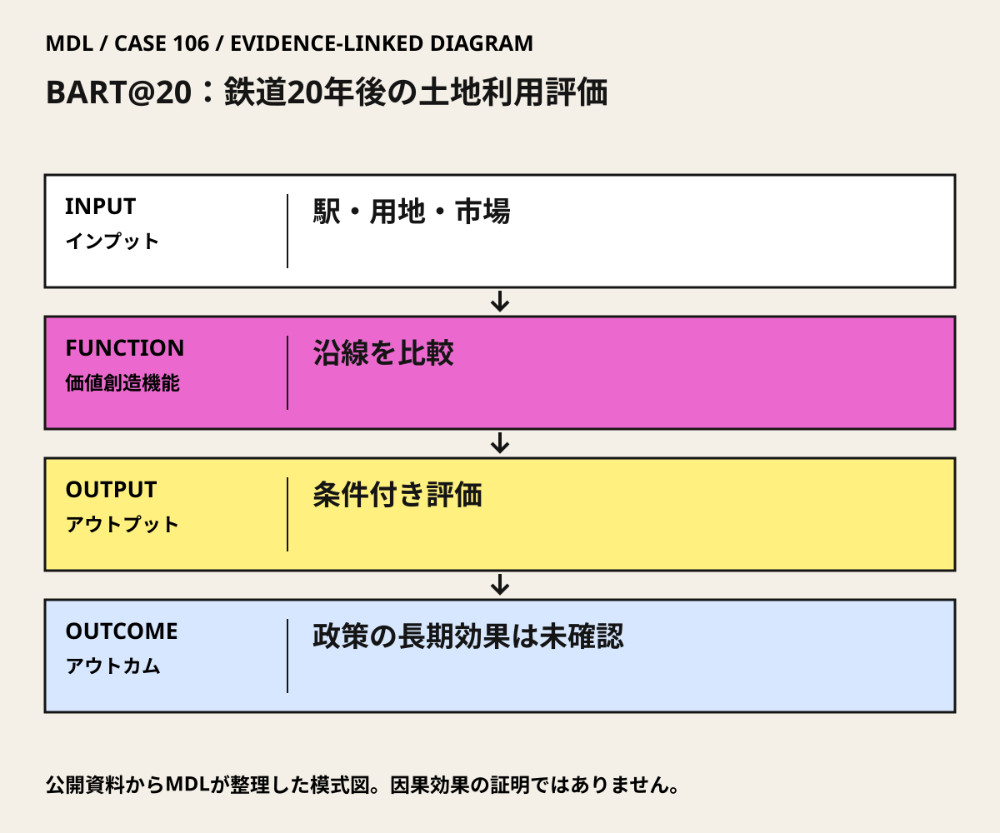

I / INPUT
何を持ち込んでいるか。
活動の出発点となる資源と課題を分けて整理します。「自社」は、その場・制度を運営する組織を指します。
II / VALUE CREATION FUNCTIONS
資源を、どう価値へ変えるか。
以下は既存の8ステップへの編集上の対応づけです。各取り組みの公式な工程名や、全工程を自前で担うことを意味しません。
III / OUTPUT
直接、何が生まれたか。
試作品、データ、契約、標準、育成した人材など、活動から直接生まれたもの。
BART開業約20年後の土地利用評価と、本人たちによる研究解説。
駅整備と土地利用政策・市場条件を一緒に考えるための判断材料。
MDLの分析出典 1
IV / OUTCOME
その結果、何が変わったか。
実際の利用、行動、業務、事業、地域の変化。報告された変化と、当該活動に帰属できる効果は区別します。
研究はSan Francisco中心部や一部の郊外拠点で開発を支えたと分析する一方、地域全体への成長誘導は限定的だったとする。
この研究の提言によって新たに生じた開発量や生活改善は、確認資料から分離できない。
公開資料では未確認
PROJECT IN FOCUS / 具体的な事例
BART@20：鉄道20年後の土地利用評価
確認できた段階：鉄道沿線の研究評価 調査確認日 2026-10-06
誰の課題を、どう扱ったか
評価の限界：歴史的な観察研究であり、鉄道だけの因果効果を実験で分離したものではない。現在のBARTやすべての駅へ結果を延長しない。地価上昇は住民の生活改善と同義ではなく、居住継続・負担増を別に調べる必要がある。
DESIGN BACKWARDS FROM IMPLEMENTATION
社会実装から逆算して、
何を先に整えているか。
実証の先にある導入・運用・継続から、この事例の設計を読み解きます。原典で確認できる仕組みと、MDLの設計解釈・他地域へ応用するための提案を区別して読んでください。「提案」「未実施」と記す内容は、当地で実施済みの工夫ではありません。仕組みの存在と、全案件で成果が出たことも別に扱います。
MORE DETAIL / 運営・根拠・応用
運営の全体像と、学びを深める資料。
費用負担、公表値、応用条件、写真・動画、原典を続けて確認できます。
01どう動かしているのか。
沿線の開発・人口・雇用などを調べ、駅があることだけで成長を説明せず、都市計画と市場の違いを照合する。成功拠点と伸びなかった地区を同じ問いで比べ、交通投資の必要条件と十分条件を切り分ける。
意思決定と本人の関与：学習上の判断：自治体の都市計画・交通部門が新駅や駅前整備を決める前に、運行、用途規制、用地、需要、地域合意のどこが制約かを確かめる。研究自体が新たな開発許可を決めたとは確認していない。 Robert CerveroはJohn Landisと研究を主導。BARTの建設・運営や沿線施設の設計を担った事例ではない。
- 拠点ごとの変化を比較する
- 市場と政策を照合する
- 伸びなかった条件を残す
02誰が負担し、誰が担うか。
研究費の個別負担・委託契約は確認資料では未確認。鉄道建設費と本研究の費用を混同しない。
制度やプログラムの財源と、各参加企業・地域に発生する費用は同じではありません。公開範囲を超える案件別予算・契約条件は未確認です。
03確認できたこと。
04日本で活かすなら。
日本では駅前建物の床面積だけで評価せず、交通サービス、利用できる生活機能、家賃・駐車費を同じ地区単位で捉える。鉄道計画と土地利用計画を別々に最適化しないという学びとして使う。
05そのまま真似できないこと。
歴史的な観察研究であり、鉄道だけの因果効果を実験で分離したものではない。現在のBARTやすべての駅へ結果を延長しない。地価上昇は住民の生活改善と同義ではなく、居住継続・負担増を別に調べる必要がある。
06次に、何を確かめるか。
提案・未実施：自治体の都市計画担当を責任者に、1駅勢圏と比較地区を90日で診断。徒歩の連続性、生活目的地への所要時間、空き地・空室、賃料負担を指標に、現状維持、徒歩改善、運行改善、生活サービス配置を比較する。Continue＝改善対象と実施主体・費用負担が一致、Pivot＝需要や用地条件に合わず案を変更、Stop＝安全や居住継続の悪化を解消できない。
07写真・図と原資料で確かめる。
現場の写真を見る ↑
DIAGRAM: モビリティデザインラボ · 根拠資料 ↗
図の説明
公開資料に基づく模式図。駅・用地・市場 → 沿線を比較 → 条件付き評価 → 政策の長期効果は未確認。実景や地理的配置を示さない。
2026-10-06 · MDL作成の説明図。第三者の写真・図面の複製ではありません。
冒頭写真：BARTフルートベール駅周辺のFruitvale Village
原資料で、当時の調査・実践を読む ↗08原典を読む。
Middle Age Sprawl: BART and Urban Development ↗
共同研究の方法、拠点差、政策・市場・用地条件と結論
英語・本人たちの研究解説。公開ウェブ記事。今回の直接接続は確認画面により未完了
BART’s Benefits for Office and Apartment Properties ↗
p.14でCervero・LandisのBART@20研究を確認
英語・BART公式調査報告。全文PDF・無料
Travel demand and the 3Ds: Density, diversity, and design ↗
本人共著の3Ds原典。BART@20とは別研究の理論入口
英語・査読原論文・MIT公開PDF。全文PDF・無料